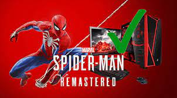

¿Para cuándo Spider-Man en PC?

God of War tuvo un excelente lanzamiento en plataformas como Steam tras su llegada reciente a PC. Los jugadores esperan que Sony considere esto una buena señal para lanzar otros grandes títulos que se mantiene como exclusivos de consolas, entre ellos Marvel's Spider-Man.
La popularidad del superhéroe es innegable y ha aumentado mucho recientemente, así que hay fans esperanzados de ver en algún momento al menos la entrega de PlayStation 4 en PC. Algunos de ellos aprovecharon el éxito de God of War para pedirle a Sony que haga este sueño realidad.
Así que usaron las reseñas de God of War en Steam para demostrar su interés por Marvel's Spider-Man y otras grandes producciones en manos de la compañía.
Marvel HEROES anteriormente conocido como Marvel Heroes 2015, Marvel Heroes 2016 y Marvel Heroes Omega fue un videojuego free to play,
multijugador masivo en línea desarrollado por Gazillion Entertainment y Secret Identity Studios